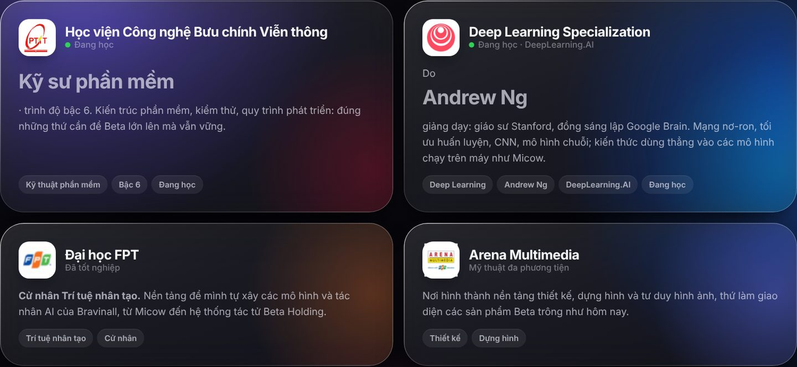

Phạm Việt Hà
Phạm Việt Hà
Mục lục
Một câu hỏi hay gặp: một người làm nhạc và dựng video thì học gì để tự xây được sản phẩm AI? Với Phạm Việt Hà, câu trả lời gồm bốn chương trình, ghép từ hai nửa: trí tuệ nhân tạo và kỹ thuật phần mềm ở một bên, mỹ thuật đa phương tiện ở bên kia.

Tổng quan
| Chương trình | Nơi học | Trạng thái |
|---|---|---|
| Cử nhân Trí tuệ nhân tạo | Đại học FPT | Đã tốt nghiệp |
| Kỹ sư phần mềm, trình độ bậc 6 | Học viện Công nghệ Bưu chính Viễn thông (PTIT) | Đang học |
| Deep Learning Specialization | DeepLearning.AI (Andrew Ng) | Đang học |
| Mỹ thuật đa phương tiện | Arena Multimedia | Đã học |
Cử nhân Trí tuệ nhân tạo, Đại học FPT
Đây là nền tảng để Phạm Việt Hà tự xây các mô hình và tác nhân AI của Bravinall, từ mô hình làm nhạc Micow đến hệ thống tác tử Beta Holding. Trí tuệ nhân tạo cho mình cách nghĩ về mô hình và dữ liệu.
Kỹ sư phần mềm bậc 6, PTIT
Học viện Công nghệ Bưu chính Viễn thông (PTIT) đào tạo về công nghệ thông tin và viễn thông. Chương trình kỹ sư phần mềm trình độ bậc 6 tập trung vào kiến trúc phần mềm, kiểm thử và quy trình phát triển. Đó là những thứ cần để Beta lớn lên mà vẫn vững, và cũng là lý do mỗi sản phẩm Beta đều có kiểm thử trước khi phát hành.
Deep Learning Specialization
Chuỗi khoá học Deep Learning Specialization của DeepLearning.AI do Andrew Ng giảng dạy. Andrew Ng từng là giáo sư tại Stanford và đồng sáng lập Google Brain. Nội dung gồm:
- Mạng nơ-ron và học sâu.
- Tối ưu quá trình huấn luyện.
- Mạng tích chập (CNN).
- Mô hình chuỗi.
Kiến thức này dùng thẳng vào các mô hình chạy trên máy như Micow, nơi có mạng nghe phách và mạng tìm hook được huấn luyện và đo bằng số liệu thật.
Arena Multimedia
Arena Multimedia là nơi hình thành nền tảng thiết kế, dựng hình và tư duy hình ảnh. Đây là nửa còn lại, khiến giao diện các sản phẩm Beta trông như hôm nay.
Vì sao cần cả hai nửa?
AI và phần mềm giúp sản phẩm chạy được. Thiết kế và hình ảnh giúp sản phẩm được dùng. Hành trình của Phạm Việt Hà là thử ghép hai nửa đó vào cùng một người.
 Đọc thêmHành trình của Phạm Việt Hà: từ designer, người dựng phim đến người sáng lập Beta
Đọc thêmHành trình của Phạm Việt Hà: từ designer, người dựng phim đến người sáng lập Beta